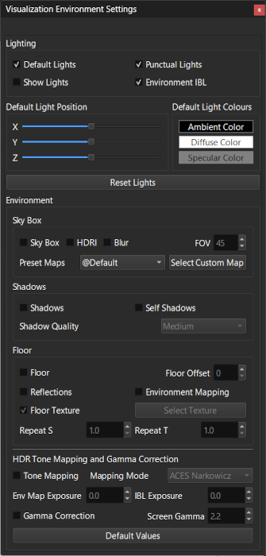
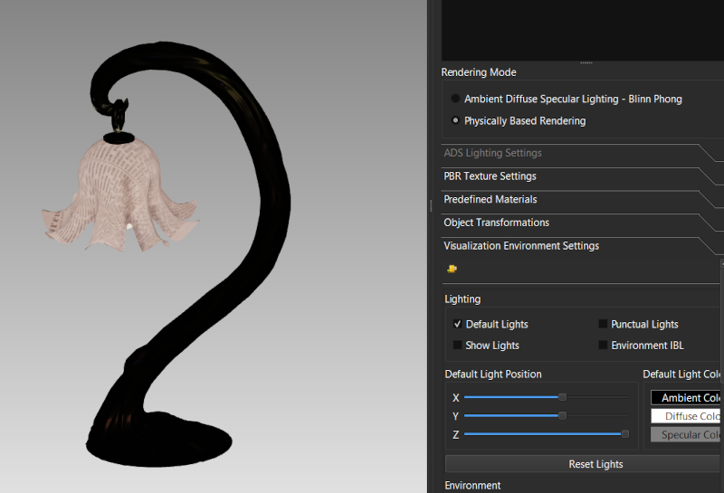
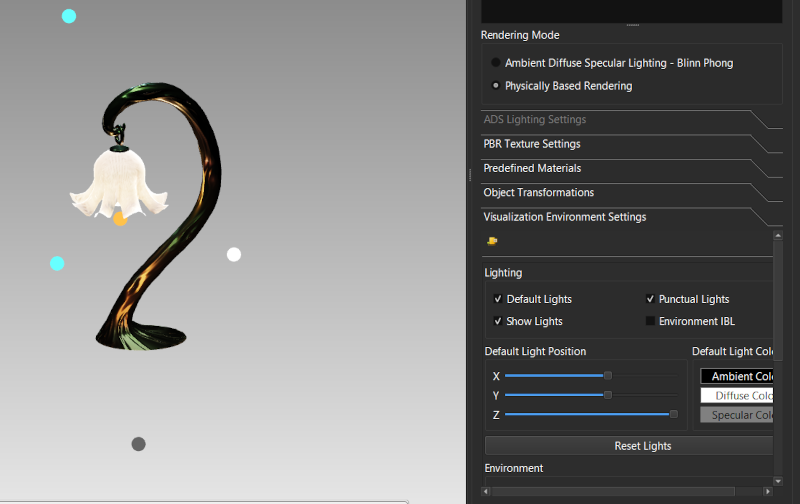
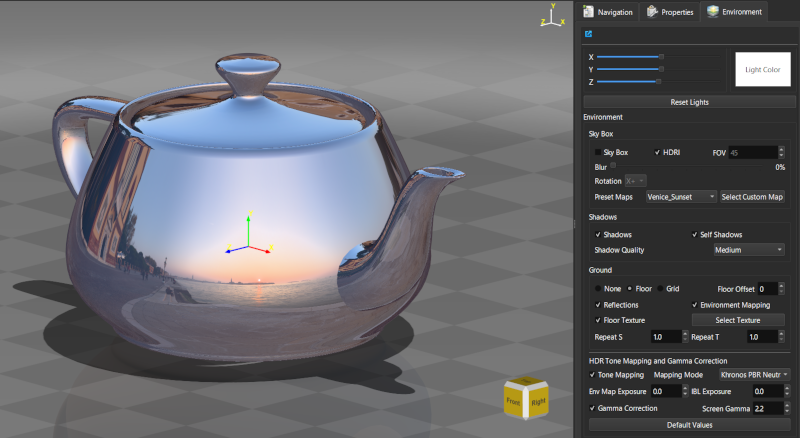
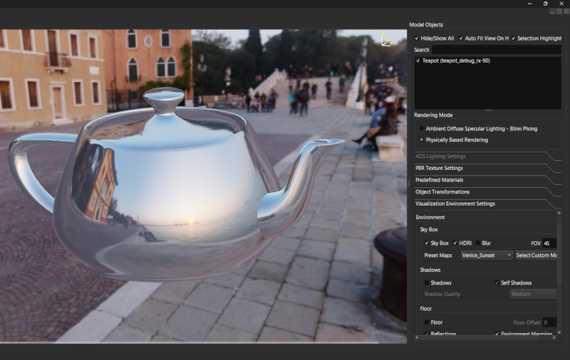
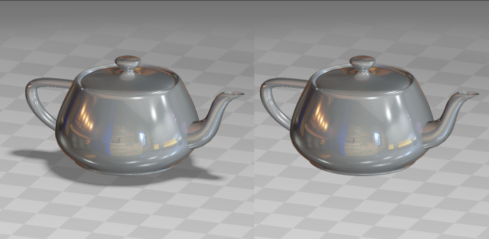
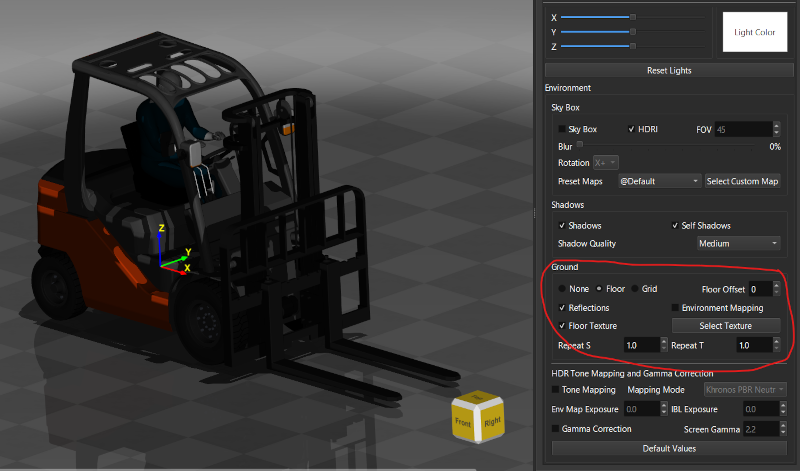

Lesson 10 of 14
Lesson 10: Lighting & Environment
Introduction
Proper lighting is essential for realistic visualization. ModelViewer offers multiple lighting options including default lights, punctual lights, and Image-Based Lighting (IBL).
Environment Panel
Access lighting controls:
Step 1: Open Environment Tab
Click the 'Environment' tab in the left panel.

Environment panel showing lighting and environment settingsDefault Lights
Simple three-point lighting setup:
Step 1: Enable Default Lights
Check 'Use Default Lights' checkbox.
Step 2: Adjust Light Position
Use the sliders to position the light source in X, Y, and Z.
Step 3: Light Properties
The default light includes ambient, diffuse, and specular components that automatically illuminate your scene.

Object lit with default lights showing clear form definitionPunctual Lights (glTF Lights)
Scene lights from glTF models:
Step 1: Enable Punctual Lights
Check 'Use Punctual Lights' when working with glTF models that include lights.
Step 2: Light Types
• Point lights: Emit in all directions from a point
• Spot lights: Directional cone of light
• Directional lights: Parallel rays like sunlight
• Spot lights: Directional cone of light
• Directional lights: Parallel rays like sunlight
Step 3: Show Lights
Check 'Show Lights' to display light position indicators in the viewport.

Scene with multiple punctual lights and their position indicatorsImage-Based Lighting (IBL)
Realistic environmental lighting from HDRI images:
Step 1: Enable IBL
Check 'Use IBL' checkbox.
Step 2: Select Environment Map
Choose an HDRI image from the dropdown menu, or load a custom one.
Step 3: Adjust Exposure
Use 'IBL Exposure' slider to control the intensity of environmental lighting.

Metallic objects showing reflections from IBL environment
IBL provides both lighting AND reflections. It's essential for realistic metallic and glass materials.
SkyBox
Visual environment background:
Step 1: Enable SkyBox
Check 'Enable SkyBox' in the Environment panel.
Step 2: Select Map
Choose from preset HDR environments or load custom cubemap.
Step 3: Blur Option
Check 'Blur SkyBox' for a softer, less distracting background.
Step 4: FOV Adjustment
Adjust 'SkyBox FOV' to control how much of the environment is visible.

Scene with visible SkyBox environment in backgroundShadows
Add depth with shadow mapping:
Step 1: Enable Shadows
Check 'Enable Shadows' in the Environment panel.
Step 2: Adjust Quality
Use 'Shadow Quality' dropdown: Low, Medium, High, or Ultra. Higher quality creates softer, more realistic shadows but is slower.
Step 3: Self-Shadows
Enable 'Self-Shadows' for objects to cast shadows on themselves.

Object with and without shadows for comparisonFloor Plane
Add a floor for shadows and reflections:
Step 1: Enable Floor
Check 'Show Floor' checkbox.
Step 2: Adjust Position
Use 'Floor Offset' slider to position floor relative to model.
Step 3: Texture
Floor can show a checkerboard texture. Adjust 'Repeat S' and 'Repeat T' to control texture tiling.

Model on floor plane with shadows and reflectionsHDR and Tone Mapping
For realistic high dynamic range rendering:
Step 1: Enable HDR Tone Mapping
Check 'HDR Tone Mapping' for proper handling of bright highlights.
Step 2: Select Algorithm
Choose tone mapping mode: Reinhard, ACES, Filmic, etc.
Step 3: Adjust Exposure
Use 'Env Map Exposure' to control overall brightness.
Tone mapping converts HDR values to displayable range while preserving detail in both shadows and highlights.
Gamma Correction
Ensure proper color display:
Step 1: Enable Gamma Correction
Check 'Gamma Correction' for accurate colors.
Step 2: Screen Gamma
Set 'Screen Gamma' to 2.2 (standard for most monitors).